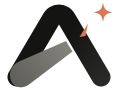

Six ways to add "ask" for askaugmented.com. Each keeps the A mark and the Montserrat wordmark from the app. Shown on the light page, on dark, and in the site header (desktop and phone) below.

One line, same letters; "ask" picks up the accent colour.
"Ask" as a quiet verb; the name keeps its weight.
A small spaced "ASK" above the name; the header height stays the same.
"ASK" in a small clay speech tag: the question, then the name.
Lowercase, read as the address: askaugmented.
The mark sits between the words, like a pause before the name.